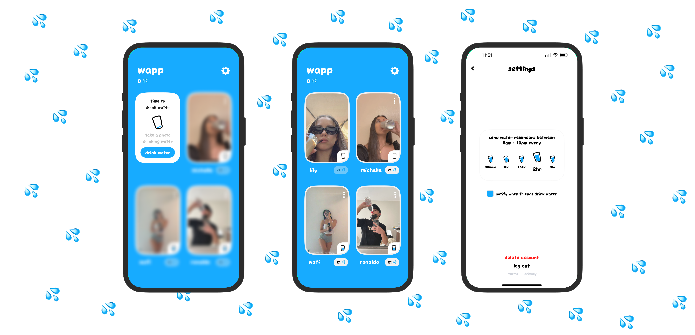

written by Vidy Thatte
Introducing the Water App, or Wapp for short. This social app is designed to help you and your friends stay hydrated by reminding you to drink water throughout the day. Getting started is easy - simply sign up using your phone number, add your friends, and indicate how many times you'd like to be reminded to drink water each day.
To hold yourself accountable, you must take a photo of yourself drinking water whenever you receive a reminder. Your friends can view these photos, providing an opportunity to share selfies and engage with each other by spurring one another on with supportive reactions 💦.
While drinking water may be a mundane daily task for many, adding a social component can make it more fun and memorable. It also provides an opportunity to share photos of what you're up to with friends.
Since launching the app a week ago, we've received overwhelmingly positive feedback and are excited to see where this project will go. We look forward to growing with our users and continuing to make hydration a more enjoyable experience for everyone.